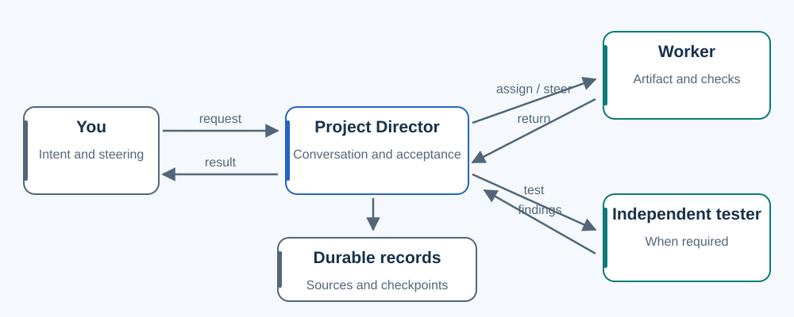

One slide request. Repeated UI work.
The amount of durable knowledge and coordination should follow the actual work.

Six slides
Ask for six onboarding slides. The Director captures the result and acceptance conditions, assigns an author and evaluates the returned artifact. No Slides Department is needed.
Midstream: “Keep participant instructions concise; put facilitator guidance in notes.” Apply that direction now, preserve the source and route it to the same author. A deck-specific choice stays local. An explicit ongoing course-slide rule can become durable scoped knowledge.
A growing UI project
Several UI tasks rediscover the same accepted design principles. Retain those in a maintained design reference and UI role. This is useful knowledge, not automatically another live coordinator.
A later outcome spans native UI, engine behavior, artwork and independent testing. If detailed coordination would occupy the main conversation, assign a bounded outcome Director with the appropriate overlay. It retains the whole delivery; the Project Director retains conversation and user-facing acceptance.
If that shared coordination recurs across outcomes, an authorized maintainer can introduce an Experience header and explicit task pointer. Keep testing independent and preserve release/install authority. The header's existence must reach the next relevant assignment.